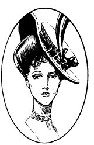

勒杜斯，巴迪.米歇尔
勒杜斯，巴迪.米歇尔（LeDuece, bady
Michelle）
狐人，混乱邪恶
力量： 12
敏捷： 17
体质： 13
智力： 14
灵知： 16
魅力： 19
防御等级： 2，4或6
移动力： 24，18或12
等级/生命骰数：8+1
生命值：51
零级命中率：13
攻击次数：1
攻击/伤害：作为银狐的咬（1d2），作为狐人的咬（2d6），作为人类的武器攻击（同武器）
特殊攻击：魅惑
特殊防御：只受银制或+1 武器伤害
魔法抗力：无
战斗：米歇尔女士能使用三种不同的形态；每种形态的战斗能力各不相同。
第一种形态，银狐，与普通的动物没有区别。在这种形态下，她的护甲等级为2，以啃咬造成1d2的伤害。
她的第二形态是人类和银狐的混合体。在这种形态下，她的AC为4，她野蛮的撕咬会造成2d6的伤害。虽然大多数狐人能够通过啃咬的方式传播兽化病，但米歇尔女士没有这种能力。
当她处于拥有惊人美貌的人类形态时，她的AC为6，必须依靠世俗的武器来保护自己。她通常会使用一把象牙柄的小型德林杰手枪。然而，只有在这种形态下，她才能使用她的法术能力（见下文）。
作为人类女性，她散发出一种神秘的气质，迫使所有看到她的男性角色进行对抗法术的豁免检定，否则就会被她所魅惑。与其他战役中的狐女不同，米歇尔拥有的是人类形态，而不是精灵形态，并且她对睡眠或魅惑法术没有特殊抗力。
在兽化人的力量之外，米歇尔.勒杜斯还是一名老练的施法者。她拥有8级行家的施法能力。但她的法术能力相当有限，她只能使用附魔/魅惑学派的法术，或潜修者的动物以及魅惑领域的法术，对于潜修者法术，她同样以8级的能力施法。
巢穴：在侏罗山脉的细长的高原上，一座俯瞰着莱茵河的优雅豪宅就是米歇尔女士的家。这座宏伟庄园的历史可以追溯到文艺复兴后期。庄园包括十几平方英里的土地，一圈不详的铁栅栏将庄园四周圈牢。
勒杜斯庄园的土地上林木繁茂，到处都有种类繁多的动物。正如预料的那样，其中大部分是银狐和它们的猎物。然而，闯入者不时地发现自己所面对的野兽出乎意料之外。庄园内的任何动物，无论是野生的还是驯养的（但不包括被魅惑的），都处在米歇尔女士的绝对控制下。她可以通过心灵感应感知动物看到的、听到的或闻到的一切，并可以指挥动物的行动。一般来说，她不会让自己的动物与冒险者们作对，除非她陷入某种形式的决战。
背景：勒杜斯家族是一个古老而受人尊敬的家族。自罗马帝国灭亡以来，这个家族一直统治着侏罗山脉德法两国之间的边界。勒杜斯家族以其优雅和庄重而闻名，在平民中颇具声望。
当18世纪的法国大革命将贵族赶下权力的舞台时，勒杜斯家族庇护了许多试图逃往德国和瑞士的皇室成员。当时的家族领袖安德烈.勒杜斯确信，他和他的后代所享有的良好声誉能使他们免受革命分子的愤怒。事实上，他认为，在当时的混乱平息后，勒杜斯家族将在新政府中发挥非常重要的作用。
然而，当他和他的家人将面对将被处死的现实时，安德烈与革命者间达成了一项协议。他会交出在他庄园内藏身的其他贵族，作为交换，他和他的家人能得到特赦。在革命的代表们围捕难民的时候，遭到背叛的贵族之一，让.杜瓦尔愤怒了，他找到安德烈.勒杜斯。在激烈的争论之后，杜瓦尔杀死了勒杜斯。在被拖上断头台前，杜瓦尔给勒杜斯这个叛徒家族下了可怕的诅咒。
从那一天起，勒杜斯家族的女性便因其非凡的美貌和背后的残忍嗜血而闻名。米歇尔.勒杜斯是她家族中的最后一人，她正在寻找一位与她的美貌和地位相称的丈夫。她已经考虑过了无数潜在的伴侣，但最终他们都被厌倦了，并用痛苦的死亡为米歇尔带来了最后的快乐。
